PTAと学校の分離原則
学校がPTAの本来事務を抱え込まないために
PTAと学校を切り離すことは、PTAを否定するためではありません。学校の施設、名簿、徴収金、連絡手段、教職員の勤務時間に埋め込まれたPTA事務を整理し、PTAを、保護者と教職員が任意の意思で参加する社会教育関係団体として本来の位置に戻すための措置です。
教育委員会が確認すべき対象は、PTA内部の議決や役員人事そのものではありません。学校が任意団体の入会管理、会費徴収、名簿作成、役員選出、連絡、施設利用を支えていないかという、学校運営上の公私分離です。
1 現場で起きている混在運用
全国の学校現場では、PTA加入の意思確認が明確に行われないまま、保護者が会員として扱われる運用が少なくありません。入会申込記録が確認できない、または申込書が形式だけで、実際には加入前提の手続として扱われている例があります。
典型的には、入会意思を確認する前に、役員希望調査、委員希望調査、免除申請、くじ引き、会費引落しの案内が進みます。保護者は「加入するかどうか」を問われる前に、「どの役を担うか」「免除が認められるか」「会費をどう支払うか」という事務に組み込まれます。
さらに、入学式や学校説明会の流れの中でPTA説明が行われ、学校徴収金とPTA会費が同じ通知や同じ口座引落しで扱われ、学校連絡ツールや児童経由配布でPTA内部事務が流れると、保護者から見ればPTAは学校手続の一部に見えます。
この状態では、任意加入という表示があっても、加入しない自由、会費を支払わない自由、役員選出の対象にならない自由は実質的に選びにくくなります。問題は、PTAがあることではありません。PTAの本来事務が、学校の場と学校の信用を通じて処理されていることです。
2 学校施設利用は当然ではない
学校教育法第137条は、学校教育上支障のない限り、学校施設を社会教育その他公共のために利用させることができる旨を定めています。また、文部科学省の通知は、公立学校施設の目的外使用について、地方自治法第238条の4第7項と学校教育法第137条等を踏まえて整理しています。
したがって、PTAが学校施設を利用することは当然の権利ではなく、学校教育上の支障がないことを前提とする目的外使用です。支障は、教室が空いているかどうかという物理的問題だけではありません。保護者が学校手続とPTA手続を混同すること、入会前提の役員選出や会費徴収が学校施設内で行われることも、教育的配慮の問題として無視できません。
任意加入が不明確で、入会申込記録も確認できず、学校施設内で役員選出、免除申請、会費徴収が行われている場合、教育委員会は施設利用の前提条件を確認する必要があります。PTA内部の自治に介入するのではなく、学校施設をどの条件で使わせるのかという学校管理上の問題です。
3 PTA入会は契約行為である
PTA入会は、保護者とPTAとの間の契約行為として整理されます。契約は、申込みと承諾によって成立するのが基本です。入会申込記録がなければ、誰が会員であるか、会費を請求できるか、役員選出の対象にできるかを確認できません。
学校長とPTA会長の間で何らかの委任、覚書、協定があったとしても、それによって保護者本人の入会意思が成立するわけではありません。本人の委任がないまま学校が入会手続を進めるなら、無権代理の問題が生じます。仮に学校とPTAの間に事務委任があるとしても、それは保護者本人の申込みと承諾を代替しません。
また、消費者契約法の直接適用は個別判断を要しますが、同法が前提とする情報格差・交渉力格差への配慮は、PTA入会手続にも強く関係します。学校という場で、担任、入学式、学校連絡ツール、学校徴収金と一体で加入手続が進めば、保護者には強い心理的圧迫と誤認が生じます。
したがって、教育委員会は、各校の配布文書が「加入するかどうかを問う文書」なのか、「加入済みを前提とした役員・会費・免除の文書」なのかを区別して点検する必要があります。
4 入会申込記録がないことから広がる連鎖
入会申込記録の欠落は、単なる書類不備ではありません。会員の根拠が確認できなければ、会費請求、役員選出、会員名簿、総会議決権の根拠も不安定になります。
この欠落を補うために、学校名簿、学校徴収金、学校連絡ツール、学校行事、教職員の事務処理に依存する運用が生じます。つまり、入会記録の欠落は、学校資源への依存を生む起点です。
- 入会申込記録が確認できない。
- 会員である根拠が確認できない。
- 会費請求、役員選出、会員名簿の根拠が崩れる。
- 学校名簿、学校徴収金、学校連絡ツールに依存する。
- 個人情報保護、職務専念義務、学校施設の目的外使用と衝突する。
- 教育委員会による学校とPTAの分離措置が必要になる。

5 個人情報保護法との衝突
公立学校が保有する児童・保護者情報は、学校教育上の目的のために取得・保有されるものです。これをPTAの入会管理、会費徴収、役員選出、連絡、免除審査に利用する場合、目的外利用又は第三者提供の問題が生じます。
個人情報保護委員会事務局の資料は、公立学校とPTAの個人情報のやり取りについて、学校側の個人情報保護法第5章の規律、PTA側の個人情報取扱事業者該当性、委託と単なる提供の区別、本人同意、目的外利用・提供、提供先への措置要求を整理しています。
ここで重要なのは、「同意を取ればよい」と単純化できないことです。学校の場で、入学手続、担任、学校連絡ツール、学校徴収金と一体で同意を求める場合、その同意が自由な意思に基づくものかが問題になります。また、同意しない保護者の情報を削除・マスキングできるのか、PTAが学校名簿に依存せず会員管理できるのかも確認しなければなりません。
6 会費徴収、学校徴収金、利益供与の問題
PTA会費は、任意団体であるPTAの会費であり、学校が当然に徴収できる学校徴収金ではありません。文部科学省の業務適正化資料が学校徴収金の徴収・管理ですら役割分担の対象としていることを踏まえれば、学校徴収金ですらないPTA会費を学校が処理することは、より慎重に点検されるべきです。
学校徴収金と同じ通知、同じ口座、同じ引落しでPTA会費が扱われれば、保護者はPTA会費を学校に支払うべき費用と誤認します。入会申込記録がない場合には、会費請求の根拠そのものが問題になります。
さらに、学校職員がPTA会費の徴収、督促、会計処理、名簿管理を無償で担っている場合、PTAに対する公的労務の無償提供、事務負担分の未請求、利益供与的な問題が生じ得ます。地方財政法第4条の5の割当的寄附の問題も、PTA会費を学校費用のように扱う運用との関係で慎重に確認する必要があります。
7 教職員関与と職務専念義務
地方公務員法第35条は、職員が勤務時間及び職務上の注意力を職責遂行のために用い、地方公共団体がなすべき職務にのみ従事しなければならない旨を定めています。
PTAが学校教育と密接な関係を有するとしても、入会管理、会費徴収、役員選出、会計処理、免除審査、内部文書作成は、PTA自身が担うべき本来事務です。密接であることは、任意団体の本来事務を学校職務に吸収する理由にはなりません。
職務専念義務の特例、兼職兼業、服務上の整理がある場合でも、それによってPTAの本来事務が無制限に公務化されるわけではありません。むしろ、行政運営上必要な団体として職務専念義務免除等に接続しているなら、教育委員会は「PTA内部のこと」として責任を回避しにくくなります。
8 学校管理職のPTA役員兼任
校長、副校長、教頭等の学校管理職が、PTAの副会長、顧問、会計、監査等にあて職的に入る運用には、構造的な矛盾があります。
学校施設の目的外使用を管理する側が、施設を利用するPTA側の役員を兼ねる。学校が保有する個人情報の管理責任を負う側が、提供先となるPTA側の役員を兼ねる。PTAの適正性を確認すべき側が、PTA内部の意思決定に入っている。この状態では、学校教育法第137条の要件確認も、社会教育法第12条が前提とする団体の独立性も機能しにくくなります。
学校管理職のPTA役員兼任は、地方公務員法第35条、第38条、社会教育法第12条、学校教育法第137条、個人情報管理、利益相反を含めて複合的に点検すべきです。
9 学校連絡ツール・入学式・配布物の分離
学校連絡ツール、入学式、学校説明会、児童経由配布、担任による回収は、保護者にとって学校からの正式な手続と受け止められやすいものです。
その場にPTA加入、会費徴収、役員希望調査、免除申請を混在させると、PTAが学校の一部であるかのような誤認を生みます。消費者契約法的な情報格差・交渉力格差の観点からも、個人情報保護法上の利用目的の観点からも、学校手続とPTA手続は分けなければなりません。
学校が関与できる範囲は、原則として連絡調整にとどめるべきです。入会意思確認、会費徴収、役員選出、会員名簿作成、免除審査、督促、会計処理は、PTAの本来事務としてPTA自身が担う必要があります。

10 教育委員会が取るべき分離措置
教育委員会は、PTAを直接管理するのではなく、学校がPTA運営を支えている部分を分離する必要があります。分離措置は、PTAへの介入ではなく、学校が管理する施設、情報、徴収、勤務時間、連絡手段を適正に扱うための学校運営上の措置です。
| 確認対象 | 確認すべき内容 | 必要な措置 |
|---|---|---|
| 入会 | 全会員分の入会申込記録があるか。 | 記録が確認できない保護者を会員扱いしない。 |
| 会費 | 学校徴収金とPTA会費が混在していないか。 | PTA会費をPTA名義の独自徴収へ分離する。 |
| 個人情報 | 学校名簿や学校連絡ツールをPTA事務に利用していないか。 | 学校保有個人情報とPTA会員情報を分離する。 |
| 教職員関与 | PTA本来事務を教職員が担っていないか。 | 学校関与を連絡調整の範囲に限定する。 |
| 学校施設 | 施設利用を目的外使用として確認しているか。 | 任意加入、個人情報、会費徴収の適正性を条件確認する。 |
| 管理職兼任 | 校長・教頭等がPTA役員にあて職で入っていないか。 | 施設・情報・会計を管理する側とPTA側の役員を分離する。 |
11 PTAを社会教育関係団体として正常に戻す
PTAは、学校の補助機関ではありません。学校の会費徴収装置でも、学校行事の下請け組織でもありません。
PTAは本来、保護者と教職員が、任意の意思に基づいて参加し、子どもをめぐる学びや協力を行う社会教育関係団体です。学校から切り離すことによって、PTAは弱くなるのではありません。学校の影に隠れた慣行から解放され、会員の意思に基づく、主体的で誇りある団体に戻ることができます。
12 配布・共有用資料
教育委員会内部での検討、校長会での共有、各学校への実態確認に使える資料を掲載しています。公開ページを読んだ後、実務で使う資料だけをここから取得できます。
| 資料 | 用途 | 形式 |
|---|---|---|
| 教育委員会向けガイドライン | 庁内共有、校長会での説明、学校管理職への説明資料 | |
| 教育委員会通知ひな形 | 各学校へ分離措置を通知する際のたたき台 | |
| 学校別実態調査票説明 | 学校別に入会、会費、名簿、施設、教職員関与を確認するための説明資料 | |
| 学校別実態調査票 | 各校の状況を一覧化し、分離措置の優先順位を確認するための調査票 | Excel |
13 根拠資料の確認
本文と配布資料の根拠は、一次資料台帳で確認できます。法令、通知、行政資料、自治体回答の確認状況を分け、未確認資料は断定引用しない扱いにしています。
図表は本文中に掲載しています。Markdown原稿や図表ソースは制作管理用のファイルであり、公開ページの補助導線には出していません。
14 大元サイトとの関係
このページは、PTAと学校の分離資料を掲載する独立ページです。PTA適正化推進委員会全体の活動、資料、論考、教育委員会回答等については、次の大元サイトに整理します。
ただし、本ページの資料群は ptaorg/jp 内で完結して管理します。大元サイトへのリンクは補助導線であり、本文の根拠や資料管理の代替ではありません。